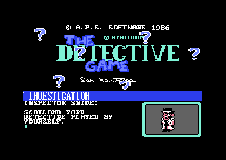
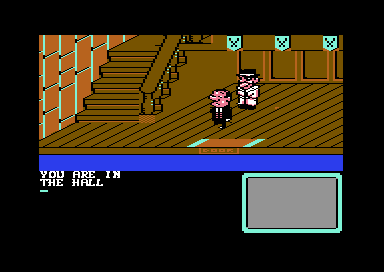
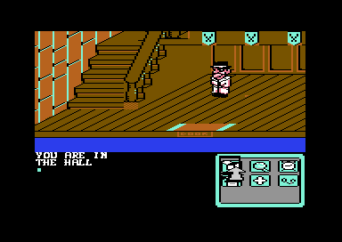

<meta charset="utf-8">
<meta name="viewport" content="width=device-width, initial-scale=1">
<title>The Detective</title>
<link rel="preconnect" href="https://fonts.googleapis.com">
<link rel="stylesheet" href="https://fonts.googleapis.com/css2?family=Lato:wght@400;700;900&family=IBM+Plex+Mono:wght@400;500&display=swap">
<style>
:root{
  --bg:#23262d; --paper:#e9e7e1; --surface:#ffffff; --surface-2:#f1efea; --line:#d5d3cc; --line-soft:#e0ded8;
  --ink:#2f3136; --ink-soft:#55585f; --ink-mute:#80838a;
  --link:#1f5fa8; --link-hover:#154480; --accent:#1f5fa8;
  --amber:#c25a00; --cyan:#1f5fa8; --coral:#d04a3a; --green:#2a8a4a; --violet:#4a5bd6; --hl:#fff0c2;
  --chip:#2f3136; --chip-ink:#ffffff;
  --c64blue:#40318d; --c64grey:#686868;
  --fd:'Lato',system-ui,sans-serif; --fb:'Lato',system-ui,sans-serif; --fm:'IBM Plex Mono',ui-monospace,Menlo,monospace;
  --col:1080px; --gx:68px; --fs:17px; --lh:1.6; --hw:900; --h1:46px; --h2:26px; --sy:48px; --pp:26px; --r:10px;
  --plate-shadow:0 1px 2px rgba(0,0,0,.05),0 4px 14px rgba(0,0,0,.05);
}
*{box-sizing:border-box}
html{background:var(--bg);min-height:100%}
body{background:var(--paper);color:var(--ink);font-family:var(--fb);font-size:var(--fs);line-height:var(--lh);max-width:var(--col);margin:0 auto;min-height:100vh;padding:0 0 4rem}
h1,h2,h3{font-weight:var(--hw);letter-spacing:-.01em;text-wrap:balance;color:var(--ink);margin:0}
.wrap{padding:0 var(--gx)}
.hero{padding:48px var(--gx) 8px;text-align:left}
.eyebrow{font-family:var(--fm);font-size:12px;letter-spacing:.08em;text-transform:uppercase;color:var(--ink-mute);margin:0 0 10px}
.hero h1{font-size:var(--h1);line-height:1.15;letter-spacing:-.02em;margin:0 0 14px}
.hero .sub{margin:0 0 .6em;color:var(--ink-soft)}
section{padding:var(--sy) 0 24px}
section:last-of-type{border-bottom:none}
.fig{font-family:var(--fm);font-size:12px;letter-spacing:.08em;text-transform:uppercase;color:var(--ink-mute);margin:0 0 10px}
h2.t{font-size:var(--h2);margin-bottom:12px}
.lede{color:var(--ink-soft);margin:0 0 30px}
.plate{background:var(--surface);border:1px solid var(--line);border-radius:var(--r);padding:var(--pp);box-shadow:var(--plate-shadow)}
.cap{font-size:14px;color:var(--ink-mute);margin-top:14px;line-height:1.55}
.cap b{color:var(--ink);font-weight:700}
code{font-family:var(--fm);font-size:.82em;background:var(--chip);color:var(--chip-ink);border-radius:4px;padding:2px 6px;overflow-wrap:break-word;-webkit-box-decoration-break:clone;box-decoration-break:clone}
.td-shots{display:flex;flex-wrap:wrap;gap:14px}
.td-shots img{width:100%;max-width:384px;image-rendering:pixelated;border-radius:4px}
.td-scr{font-family:var(--fm);font-size:13px;line-height:1.5;max-height:420px;overflow:auto;background:var(--surface-2);border-radius:6px;padding:10px 14px;white-space:pre-wrap}
.td-scr .op{color:var(--violet)}
.td-scr .tx{color:var(--amber)}
.td-scr .lb{color:var(--ink-mute)}
.td-tab{width:100%;border-collapse:collapse;font-size:14px}
.td-tab th,.td-tab td{border-bottom:1px solid var(--line-soft);padding:4px 8px;text-align:left;vertical-align:top}
.td-tab td.n{font-family:var(--fm)}
.td-row{display:flex;flex-wrap:wrap;gap:10px;align-items:center;margin:0 0 14px;font-family:var(--fm);font-size:13px}
.td-spoil{border-left:4px solid var(--coral);padding:4px 14px;margin:0 0 18px;color:var(--ink-soft)}
.td-note{font-size:14px;color:var(--ink-mute)}
</style>
<!-- tabs -->
<header class="hero">
  <p class="eyebrow">1986 · Argus Press Software</p>
  <h1>The Detective</h1>
  <p class="sub">A murder mystery where every suspect follows a script in a little language of its own, against a clock that keeps real time, and the killer is the man the doctor says is dead.</p>
</header>
<main class="wrap">

<section id="game">
  <p class="fig">01 · The game</p>
  <h2 class="t">Inspector Snide at the McFungus house</h2>
  <p class="lede">Angus McFungus is dead. The player is Inspector Snide of Scotland Yard, called to his house on a stormy night at ten past nine.</p>
  <div class="td-shots">
    
    
  </div>
  <p class="cap">The title introduces the cast one at a time. Play starts in the hall, drawn at an angle across the top of the screen, with a line of scrolling speech under it and a text panel and picture box below.</p>
  <p>Nine people are in the house: the Reverend, Bentley the butler, Hilda the cook, Gabriel the maid, Cynthia, Professor Bull, Doctor Mortem, Major Sludgebucket and Mr Dingle the solicitor. They walk from room to room on their own, talk to each other and to Snide, and some of them die as the evening goes on. Snide walks the house with the joystick, and fire opens a menu of icons: examine, take, open, read, question, accuse and more.</p>
  <p>To win, Snide must put ten pieces of evidence into the evidence envelopes and accuse the right person before the clock reaches 11:03.</p>
</section>

<section id="music">
  <p class="fig">02 · Music</p>
  <h2 class="t">Music: the game's two tunes</h2>
  <div class="plate"><div id="td-sid"><p class="td-note">The player works in the built site.</p></div>
  <p class="cap">The game's own music player (<code>$945E</code>-<code>$984B</code>), run on the site's 6502 with its tunes from the listing, through a model of the C64's sound chip with a 6581's filter. <b>The title tune</b> starts at <code>$9461</code> as the game starts and plays as long as the title shows. <b>The second tune</b> starts at <code>$945E</code> when Snide first walks into a room where someone has died, and the game stops it once its first voice has read 15 bytes. Every write to the sound chip, frame by frame, matches the game's code run on the kit's 6502 (<code>test_music.js</code>).</p></div>
  <p>The player is a small sequencer. Each voice reads a list of bytes: a byte below <code>$F0</code> is a note, its low four bits one of twelve frequencies at <code>$97DD</code> and the next three bits how many octaves to drop. Bytes from <code>$F0</code> are commands: glide to the next note, vibrato on, silence the voice, change the instrument, repeat a stretch (<code>$95AC</code>). The title tune's three voices are at <code>$E680</code>, <code>$E6C0</code> and <code>$E740</code>, after the room pictures; the second tune's sit among the sprite shapes, at <code>$7AC5</code>.</p>
</section>

<section id="scripts">
  <p class="fig">03 · The cast</p>
  <h2 class="t">Nine characters, nine scripts</h2>
  <p class="lede">Every character's behaviour is a script, stored as bytes for a small interpreter. Pick a character to read theirs.</p>
  <div class="plate">
    <div class="td-row"><label>Character <select id="td-who"></select></label></div>
    <div class="td-scr" id="td-scr">The scripts are decoded in the built site.</div>
    <p class="cap">Decoded from the listing's bytes with the interpreter's own table of operand lengths (<code>$A4FE</code>), following every jump. Each instruction's length and handler were checked against the game's own fetch code (<code>$A460</code>) run on the kit's 6502 (<code>test_scripts.js</code>). Words in braces are word tokens; room numbers are the game's own.</p>
  </div>
  <p>The interpreter (<code>$A460</code>) runs once in every pass of the main loop, for one character at a time, so each character gets a turn every ninth pass. It reads the opcode from the low five bits of the next byte, looks up how many operand bytes follow (<code>$A4FE</code>), moves the character's script pointer on and jumps to one of 27 handlers (<code>$A4C8</code>). A handler that has to wait, for a door to unlock or for the message bar to be free, puts the pointer back so the same instruction runs again next turn.</p>
  <p>The instructions are about the house: walk to a room, which finds the right door in the door table (<code>$1F00</code>) and walks to it; go through a door, waiting if it is locked; say a line, which shows only if Snide is in the same room; jump if someone else is here, if the player is in a given room, or at random. One instruction, opcode 11, calls ordinary 6502 code. Dingle's second script uses it to kill.</p>
  <p>A script asks for a door it has no record of, and the game says so: the screen flashes red and "GUEST ERROR.." appears (<code>$A618</code>). It is a check the author left in for his own scripts.</p>
</section>

<section id="solution">
  <p class="fig">04 · The solution</p>
  <h2 class="t">What the scripts give away</h2>
  <p class="td-spoil">This section names the murderer and how to win.</p>
  <p>Dingle is the murderer. Alone in his room with the door locked, he lies down as if strangled (<code>$B1CF</code>). The Doctor's script then finds Snide, announces "INSPECTOR..MR. DINGLE/S BEEN STRANGLED!", leads him upstairs ("HERE..", "POOR FELLOW..TERRIBLE") and switches Dingle to a second script (<code>$B09C</code>). From then on Dingle waits for Snide to be somewhere else, and kills: Cynthia, found in the hall (<code>$AC96</code>); the Doctor, who certified him dead (<code>$B19E</code>); and Gabriel (<code>$ACEC</code>). He also plants a bomb and takes the ammunition for his gun.</p>
  <table class="td-tab">
    <thead><tr><th>To win</th><th>Where the game checks</th></tr></thead>
    <tbody>
      <tr><td>The ten pieces of evidence in the envelopes: the will, the knife, the note, the small bottle, the cravat, the syringe, the folded document, the wad of notes, the open locket and the bomb</td><td><code>$BB17</code>, <code>$BB76</code></td></tr>
      <tr><td>Accuse Dingle, and nobody else</td><td><code>$BB76</code></td></tr>
      <tr><td>Before he takes it, swap the bullets where Dingle keeps them for the blank bullets</td><td><code>$B1E6</code></td></tr>
      <tr><td>In the cellar, use the gun on him before he escapes</td><td><code>$BCAF</code></td></tr>
    </tbody>
  </table>
  <p class="cap">At the accusation Snide is led at gunpoint through a dark tunnel to the cellar, and Dingle says "VERY CLEVER, INSPECTOR.. I PAID THE DOCTOR TO CERTIFY ME DEAD, AND THEN TOOK CARE OF HIM.. NOW I JUST HAVE TO TAKE CARE OF YOU!" and fires. With the blanks loaded, "NOTHING HAPPENS" and Snide can arrest him. With the real bullets the game ends.</p>
</section>

<section id="clock">
  <p class="fig">05 · Time</p>
  <h2 class="t">A clock that keeps real time</h2>
  <p>The clock is the text "09:10" at <code>$1EBD</code>. An animation job that runs every fourth frame (<code>$2C83</code>) counts to ten and then to 75 before it adds a minute (<code>$2570</code>): 3,000 frames, which is one minute at the 50 frames a second of a European C64. Running the game for 6,100 frames moved the clock on by two minutes.</p>
  <p>The time limit is "11:03" (<code>$2158</code>). That is an hour and 53 minutes of real time from the start. When the clock reaches it, the lights go out, Snide is shot by an unseen assassin, and the game starts again from the title (<code>$2592</code>). The pause icon stops the clock by setting the game state's top bit while it waits for fire (<code>$A1E0</code>): from state 10 up, the interrupt skips its animation jobs, the clock's among them (<code>$2C57</code>).</p>
</section>

<section id="menu">
  <p class="fig">06 · The menu</p>
  <h2 class="t">A pointer with momentum</h2>
  
  <p>Fire opens the investigation menu, a box of icons in the panel. The pointer that chooses them does not move with the stick. Every fourth frame the stick changes the pointer's speed by one, up to seven either way; every sixth frame the speed drops by one towards zero; at the box's edges the pointer bounces back (<code>$315F</code>). Sam Manthorpe has called this "Newtonian physics" for the feel of the controls, and his biggest regret in the game. Zzap!64's reviewer called it the inertial cursor.</p>
  <p>The icons are built for each menu from the situation (<code>$86EE</code>): question only with someone near enough to talk to, the door icons only at a door. Each icon's picture is 48 bytes at <code>$FA00</code>, copied into the panel's character set when the menu opens.</p>
</section>

<section id="rooms">
  <p class="fig">07 · The house</p>
  <h2 class="t">Thirty rooms from seventeen pictures</h2>
  <p>Each room is drawn from a packed picture into a map 256 columns wide (<code>$0C00</code>), and the screen shows a 40-column window of it that scrolls as Snide walks. The Maps tab draws every room. Doors are drawn over the picture afterwards, from a table of 32 doors (<code>$1F00</code>). Doors of type 8 are secret passages: closed, the game draws the wall back over them, and the border, which flashes when Snide reaches something to investigate, stays still for them (<code>$3E32</code>).</p>
</section>

<section id="words">
  <p class="fig">08 · Speech</p>
  <h2 class="t">Thirty-two words in one byte each</h2>
  <p>The cast's lines are stored in capitals, with single bytes standing in for common words. A byte of <code>$60</code> or more is a token: its low five bits pick a word from a list at <code>$4A90</code>, and the print routine prints the word instead (<code>$21D8</code>). The first ten words are the names, so a script can say "<i>[8]</i>" to mean "DINGLE".</p>
  <table class="td-tab" id="td-words"><thead><tr><th>Token</th><th>Word</th><th>Token</th><th>Word</th></tr></thead><tbody></tbody></table>
</section>

</main>
<footer style="margin:16px 0 0;padding:22px var(--gx) 0;border-top:1px solid #e0ded8;font-family:'IBM Plex Mono',ui-monospace,Menlo,monospace;font-size:12px;color:#80838a"><a href="https://github.com/gamesexplained/gamesexplained" style="color:#1f5fa8;text-decoration:none">GitHub</a> · <a href="https://discord.gg/3V9GWyRDWV" style="color:#1f5fa8;text-decoration:none">Discord</a><br>© Games Explained contributors. Write-ups, facts and symbol maps are available under <a href="https://creativecommons.org/licenses/by-sa/4.0/" style="color:#1f5fa8;text-decoration:none">CC BY-SA 4.0</a>; code under <a href="https://opensource.org/licenses/MIT" style="color:#1f5fa8;text-decoration:none">MIT</a></footer>
<script src="../../lib/c64.js"></script>
<script src="../../lib/cpu6502.js"></script>
<script src="../../lib/sid.js"></script>
<script>
/* td-music */
// createDriver for C64Sid: runs the game's own music player and its two tunes, taken from the
// listing over TD_DRIVER_RANGES, on the kit's 6502 (C64Cpu, from ../../lib/cpu6502.js, which sid.js
// passes to createDriver). A tune's button calls its start as the game does ($9461 for the title
// tune, at start-up; $945E for the second, from the room event), then music_frame ($973E) once a
// frame, as the title's handler and game state 8 do. The second tune stops when the first voice has
// read 15 bytes ($1CE8 at $0F or more), as game state 8 ends it ($C0DB).
const TD_DRIVER_RANGES = [[0x945E, 0x984B], [0xE680, 0xE7FF], [0x7AC5, 0x7BBF]];
const TD_TUNES = [{ name: 'The title tune', start: 0x9461 }, { name: 'The second tune', start: 0x945E, ends: true }];
function createDriver(D, C64Cpu) {
  const base = new Uint8Array(0x10000);
  for (const [ad, bytes] of D.mem) base.set(bytes, ad);
  const sid = new Uint8Array(25);
  let m, cpu, c, writes = [], over = false;
  const io = {
    read(ad) { throw new Error('read $' + ad.toString(16)); },
    write(ad, val) {
      if (ad >= 0xD400 && ad < 0xD419) { sid[ad - 0xD400] = val; writes.push(ad - 0xD400, val); return; }
      throw new Error('write $' + ad.toString(16));
    },
  };
  const run = (ad) => cpu.call(ad, {}, { maxSteps: 100000 });
  return {
    sid,
    get writes() { return writes; },
    init(t) {
      c = D.list[t];
      m = base.slice(); cpu = new C64Cpu.CPU(m, { port: 0x35, io });
      sid.fill(0); over = false; writes = [];
      run(c.start);
    },
    stop() { over = true; writes = []; },
    play() {
      writes = [];
      if (over) return;
      run(0x973E);
      if (c.ends && m[0x1CE8] >= 0x0F) over = true;
    },
    playing() { return !over; },
  };
}
// end of td-music
</script>
<script>
/* td-scripts */
// tdScripts(ram): decodes the nine characters' scripts from the listing's bytes the way the
// interpreter ($A460) reads them: the opcode in the low five bits of an instruction's first byte,
// the number of operand bytes from the table at $A4FE ($FF: a zero-terminated string). It starts at
// each character's entry in the table at $A7FB (and the scripts TD_EXTRA lists) and follows every jump, returning for each character
// a sorted list of { a, op, len, text }. Checked against the game's own fetch by test_scripts.js.
const TD_OPS = ['wait', 'target', 'goto', 'enter room 8', 'leave room 8', 'walk to room', 'say', 'print here', 'goto if alone',
  'goto if with', 'goto unless with', 'call 6502', 'choose door', 'goto if door', 'take', 'use door, else goto', 'put object',
  'use door', 'goto at random', 'unlock', 'lock', 'goto if deaths at least', 'narrate', 'announce strangled', 'goto if player in',
  'set script', 'print'];
const TD_JUMPS = { 2: 1, 8: 1, 9: 2, 10: 2, 13: 2, 15: 1, 18: 1, 21: 2, 23: 1, 24: 2, 25: 2 };
// scripts a character is given by another's opcode 25 or by native code ($BC72), listed under them
const TD_EXTRA = { 6: [0xB006], 8: [0xB09C, 0xB159] };
function tdScripts(ram) {
  const len = (a) => {
    const op = ram[a] & 0x1F, n = ram[0xA4FE + op];
    if (n === 0xFF) { let e = a + 1; while (ram[e]) e++; return e - a + 1; }
    return n + 1;
  };
  const words = [];
  for (let a = 0x4A90, i = 0; i < 32; i++) { let e = a; while (ram[e]) e++; words.push(String.fromCharCode(...ram.subarray(a, e))); a = e + 1; }
  const text = (a, e) => Array.from(ram.subarray(a, e)).map((b) => b >= 0x60 ? '{' + words[b & 31].trim() + '}' : b === 13 ? ' / ' : String.fromCharCode(b)).join('');
  const out = [];
  for (let who = 0; who < 9; who++) {
    const seen = new Map(), todo = [ram[0xA7FB + 2 * who] | (ram[0xA7FC + 2 * who] << 8), ...(TD_EXTRA[who] || [])];
    while (todo.length) {
      let a = todo.pop();
      while (!seen.has(a) && a >= 0xA000 && a < 0xC000) {
        const op = ram[a] & 0x1F, n = len(a);
        if (op > 26) break;
        const b = ram.subarray(a, a + n);
        let t;
        if ([6, 7, 22, 26].includes(op)) t = '"' + text(a + 1, a + n - 1) + '"';
        else if (op in TD_JUMPS) { const k = TD_JUMPS[op], to = b[k] | (b[k + 1] << 8); if (op !== 25) todo.push(to); t = (k === 2 ? b[1] + ' ' : '') + '$' + to.toString(16).toUpperCase(); }
        else if (op === 11) t = '$' + (b[1] | (b[2] << 8)).toString(16).toUpperCase();
        else t = Array.from(b.subarray(1)).join(' ');
        seen.set(a, { a, op, len: n, text: t });
        if (op === 2) break;
        a += n;
      }
    }
    out.push([...seen.values()].sort((x, y) => x.a - y.a));
  }
  return out;
}
// end of td-scripts
</script>
<script>
(function () {
  'use strict';
  const $ = (id) => document.getElementById(id);
  if (typeof C64 === 'undefined') return;
  const CAST = ['the Reverend', 'Bentley', 'Cook', 'Gabriel', 'Cynthia', 'the Professor', 'the Doctor', 'the Major', 'Dingle'];
  C64.load('listing.json').then((L) => {
    const r = L.ram;
    if (typeof C64Sid !== 'undefined' && typeof C64Cpu !== 'undefined') {
      const mem = TD_DRIVER_RANGES.map(([a, b]) => [a, Array.from(r.subarray(a, b + 1))]);
      $('td-sid').innerHTML = '';
      C64Sid.mount($('td-sid'), { driver: createDriver, data: { mem, list: TD_TUNES }, tunes: TD_TUNES.map((t) => t.name), filter: '6581' });
    }
    const scripts = tdScripts(r), who = $('td-who');
    CAST.forEach((n, i) => who.add(new Option(n, String(i))));
    function show() {
      const s = scripts[+who.value];
      $('td-scr').innerHTML = s.map((i) => '<span class="lb">$' + i.a.toString(16).toUpperCase() + '</span>  <span class="op">' + TD_OPS[i.op] + '</span> ' +
        (i.text.startsWith('"') ? '<span class="tx">' + i.text.replace(/&/g, '&amp;').replace(/</g, '&lt;') + '</span>' : i.text)).join('\n');
    }
    who.onchange = show; who.value = '8'; show();
    const tb = document.querySelector('#td-words tbody');
    const words = [];
    for (let a = 0x4A90, i = 0; i < 32; i++) { let e = a; while (r[e]) e++; words.push(String.fromCharCode(...r.subarray(a, e))); a = e + 1; }
    for (let i = 0; i < 16; i++) {
      const tr = document.createElement('tr');
      tr.innerHTML = '<td class="n">$' + (0x60 + i).toString(16).toUpperCase() + '</td><td>' + JSON.stringify(words[i]) + '</td><td class="n">$' + (0x70 + i).toString(16).toUpperCase() + '</td><td>' + JSON.stringify(words[i + 16]) + '</td>';
      tb.appendChild(tr);
    }
  });
})();
</script>
